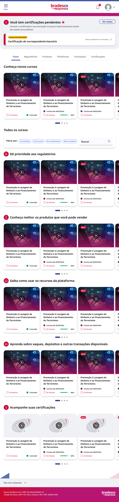
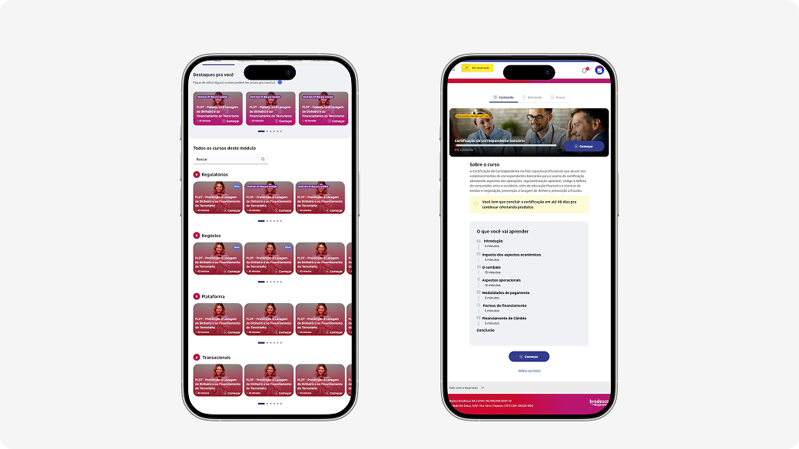
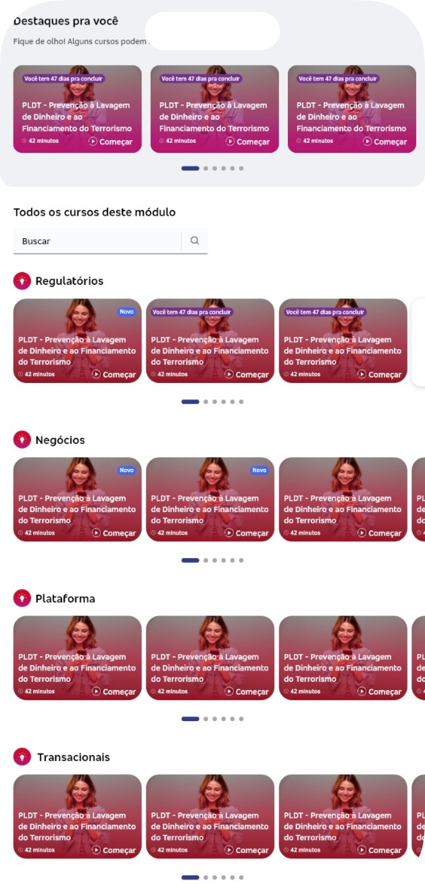
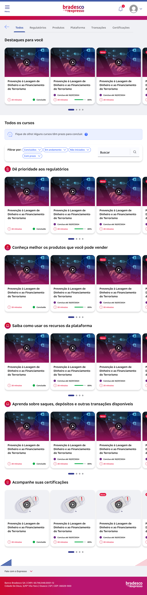
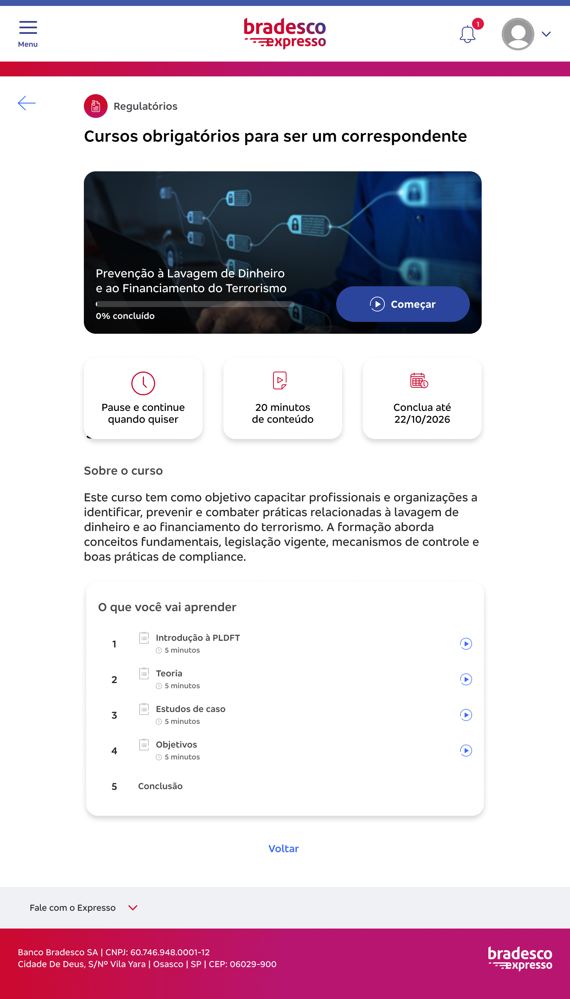

Treinamento é um produto onde o conteúdo é a experiência. A tela pode ser linda: se o correspondente não entender a regra do consignado, ele erra em campo, e erro em campo de produto bancário regulado vira risco jurídico e prejuízo. A alavanca do resultado aqui era a linguagem.
O modelo antigo de treinar correspondente bancário era presencial. E presencial, numa rede espalhada pelo Brasil inteiro, significa:
Dreno logístico. Alguém do parceiro precisava se deslocar até o estabelecimento pra ministrar o treinamento. Viagem, hospedagem, material físico, agenda.
Tempo até o primeiro real. Marcar a data, treinar, certificar. Se o correspondente reprovasse, marcar tudo de novo e voltar lá. Um processo de certificação levava semanas, e pra produto específico podia passar de um mês. Todo esse tempo o ponto está aberto sem poder operar aquele produto.
Conhecimento de alto risco. Produto bancário é complexo e regulado. Errar em campo não é constrangimento, é risco legal.
Ou seja: não era "criar um curso". Era eliminar uma fricção operacional cara.

A digitalização do processo resolveu a logística. Mas antes de liberar pra base inteira, rodamos um piloto com liberação controlada, com um grupo que já conhecia a jornada presencial. Isso foi valioso porque essas pessoas conseguiam comparar, não só reagir.
Os apontamentos que voltaram foram qualitativos e bem específicos:
Tínhamos resolvido um problema e encontrado outro.
Aqui está a parte que quase ninguém antecipa nesse tipo de projeto.
A rede de correspondentes vai do dono de mercearia que nunca abriu um app bancário até o gestor de uma grande rede varejista. Do PhD ao empreendedor que não terminou o ensino médio. Todos precisam entender exatamente a mesma coisa, com o mesmo grau de precisão, porque a regra do consignado não fica mais fácil dependendo de quem lê.
Esse é um problema de comunicação sob restrição extrema. E isso não tem UI que resolva sozinha.
O que a gente fez:
Um só sistema de comunicação para todo o espectro. Não versões diferentes por perfil (o que multiplicaria o custo de manutenção e criaria assimetria de informação), mas uma linguagem que funcionasse na ponta mais difícil sem infantilizar a outra.
Padronização da linguagem financeira. Termo bancário tem variação regional, apelido interno, sinônimo que parece igual e não é. Padronizamos pra eliminar ambiguidade de interpretação.
Critério de zero ambiguidade como aceite. Cada instrução era validada contra a pergunta: existe alguma leitura possível dessa frase que leve a pessoa a fazer a coisa errada? Se existisse, reescrevia. Isso não é preciosismo de redator, é o que evita que alguém venda um produto errado achando que entendeu.
Essa foi uma decisão estrutural, não estética: adotamos linguagem conversacional nos títulos em vez de termo financeiro solto.
Uma temática do curso não se chamava "Transacional". Porque "Transacional" é uma palavra que o time entende, o compliance entende, e o dono da mercearia ignora — ou, pior, acha que entendeu. Em vez disso, o título virava uma frase que contextualizava o tema: bateu o olho, já sabe do que aquele curso trata e por que ele importa pro dia dele.
Parece detalhe de copy. Não é. Quando você tem produto financeiro sendo ensinado pra um público com graus de escolaridade radicalmente diferentes, um rótulo técnico solto é um convite pra pessoa pular o conteúdo que ela mais precisava fazer. O termo que ninguém entende é o termo que todo mundo ignora.


O feedback sobre volume assustar apontava pra uma coisa só: o problema não era a densidade da informação, era o tamanho do bloco.
Reestruturamos o sistema em unidades de micro-learning. Produtos complexos de crédito e seguro foram quebrados em módulos de mais ou menos 3 minutos.
A lógica: correspondente não estuda numa sala reservada com café e duas horas livres. Ele estuda entre um cliente e outro, no balcão, com a loja funcionando. Módulo de 3 minutos cabe nesse intervalo. Aula de 40 minutos não cabe em lugar nenhum da vida real dele.
Resultado: prontidão operacional mais rápida, e o ponto começa a gerar receita em dias em vez de semanas.

R$ 200 mil/ano de economia é o valor reportado em assembleia de investidores como resultado da digitalização do treinamento.
80% mais rápido é a comparação com o processo presencial anterior — semanas (às vezes mais de um mês, para certificações específicas) contra dias.
Em produtos complexos e regulamentados, informação é a entrega.
A decisão de escrever "o valor que você recebe ao vender esse produto" em vez de "valor líquido de encarteiramento" não é preferência de estilo, é a diferença entre o correspondente vender certo ou errado. Esse case reforça que conteúdo não é acabamento e nem detalhe.
Esse foi um dos projetos que me empurrou de UX Writer pra Product Designer. Eventualmente, ficou impossível separar a linguagem da estrutura que a carrega.